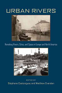

{kind=link}

The University of Pittsburgh Press Twitter Feed announced that a new book, Urban Rivers: Remaking Rivers, Cities, and Space in Europe and North America, edited by Stéphane Castonguay and Matthew Evenden, arrived from the printers yesterday. This is particularly exciting, as I'm publishing a chapter in the collection. My contribution, chapter 2, examines the importance of the River Lea in facilitating industrial development in West Ham: "The River Lea in West Ham: A River’s Role in Shaping Industrialization on the Eastern Edge of Nineteenth-Century London." Through this publication process I was able to work with a cartographer, Eric Leinberger, at the University of British Columbia, to transform some of my GIS maps into more legible and printable maps, so it will be interesting to see how they turned out. The geographic breadth of the book is really impressive and I'm looking forward to reading T.C. Smout's chapter on the Firth of Forth, as I did not get a chance to read it as an earlier draft. You can download the Table of Contents and Castonguay and Evenden's introduction from the publisher's website. The book should be available within the next week or two and it is a reasonably priced paperback. Publishers Description:Urban Rivers examines urban interventions on rivers through politics, economics, sanitation systems, technology, and societies; how rivers affected urbanization spatially, in infrastructure, territorial disputes, and in flood plains, and via their changing ecologies. Providing case studies from Vienna to Manitoba, the chapters assemble geographers and historians in a comparative survey of how cities and rivers interact from the seventeenth century to the present. Rising cities and industries were great agents of social and ecological changes, particularly during the nineteenth century, when mass populations and their effluents were introduced to river environments. Accumulated pollution and disease mandated the transfer of wastes away from population centers. In many cases, potable water for cities now had to be drawn from distant sites. These developments required significant infrastructural improvements, creating social conflicts over land jurisdiction and affecting the lives and livelihood of nonurban populations. The effective reach of cities extended and urban space was remade. By the mid-twentieth century, new technologies and specialists emerged to combat the effects of industrialization. Gradually, the health of urban rivers improved. From protoindustrial fisheries, mills, and transportation networks, through industrial hydroelectric plants and sewage systems, to postindustrial reclamation and recreational use, Urban Rivers documents how Western societies dealt with the needs of mass populations while maintaining the viability of their natural resources. The lessons drawn from this study will be particularly relevant to today's emerging urban economies situated along rivers and waterways.